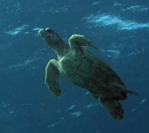
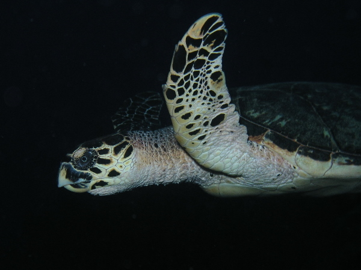
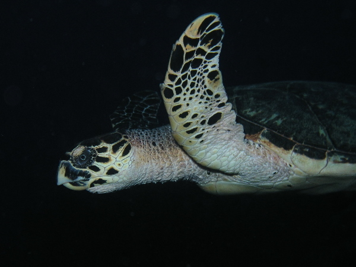

Hawksbill Sea Turtle
 (Photo on left from NOAA's Karen Salvini, Middle from U.S. Fish and Wildlife service, Right from NOAA's Jordan Wilkerson)
(Photo on left from NOAA's Karen Salvini, Middle from U.S. Fish and Wildlife service, Right from NOAA's Jordan Wilkerson)Description
The shell of the hawksbill seaturtle is 0.8-1.0 meter and they weigh anywhere from 45 to 90 kg when fully grown. They are one of the smaller types of sea turtle. Even though they are smaller, they have thicker plates on their shell than most sea turtles. The top of the shell is dark brown with yellow streaks while the underside is yellow. This turtle has a hooked beak which is where they get the name "hawksbill" from (U.S. Fish and Wildlife Service, 2016).Habitat and Location
Being an ocean dwelling species the Hawksbill sea turtle can be found all over the world, however, in North Carolina they can be found in Beaufort, Brunswick, Carteret, Currituck, Dare, Hyde, New Hanover, Onslow, Pamlico, and Pender counties (U.S. Fish and Wildlife Service, 2016).Hawksbills migrate between the beaches that are used for nesting and the coral reefs that they feed at.
Reasons For Endangerment
Hawksbill's population has declined over 80% when compared to historical numbers. As a result, better management practices have been introduced that include, but are not limited to, planting native beach vegetation, protection from predators, and moving nests in danger of being drowned by tides (Ditmer, 2016).References
Ditmer, Mark Allan, and Seth Patrick Stapleton. PloS One: Factors Affecting Hatch Success of Hawksbill Sea Turtles on Long Island, Antigua, West Indies. 7 Vol. Public Library of Science, 2012. Web. 27 Oct. 2016.
Service, U.S. Fish and Wildlife. "Species Profile for Hawksbill Sea Turtle (Eretmochelys Imbricata)." Species Profile for Hawksbill Sea Turtle (Eretmochelys Imbricata). U.S. Fish & Wildlife Service, n.d. Web. 27 Oct. 2016.